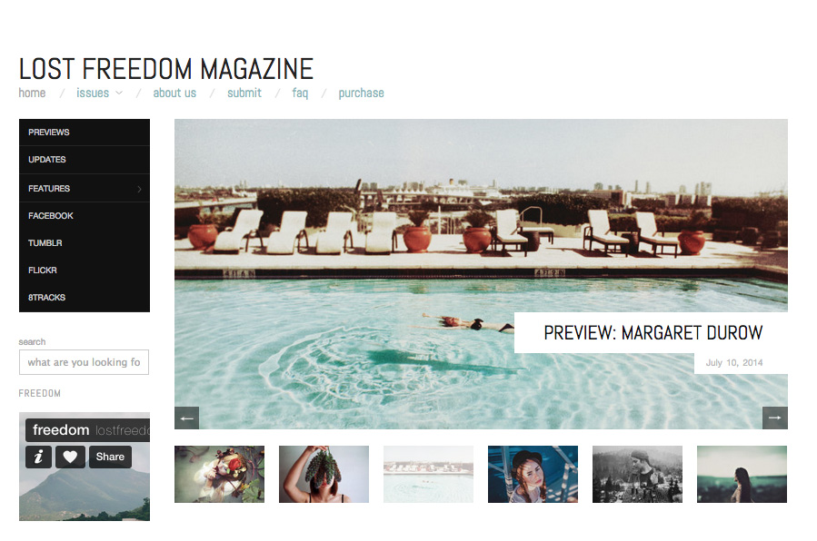
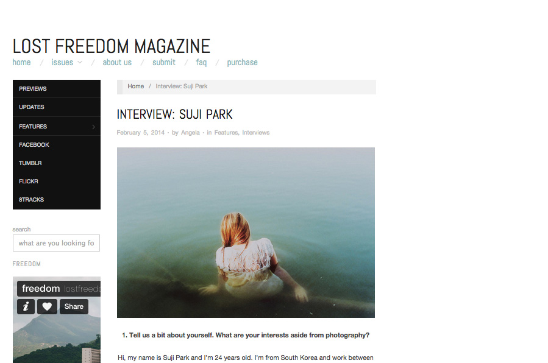
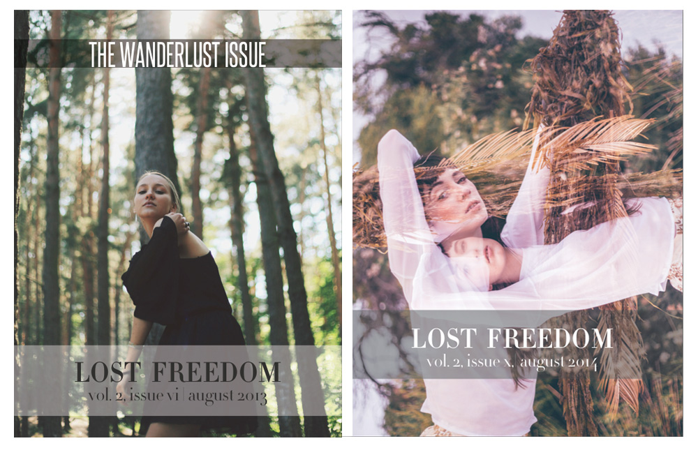
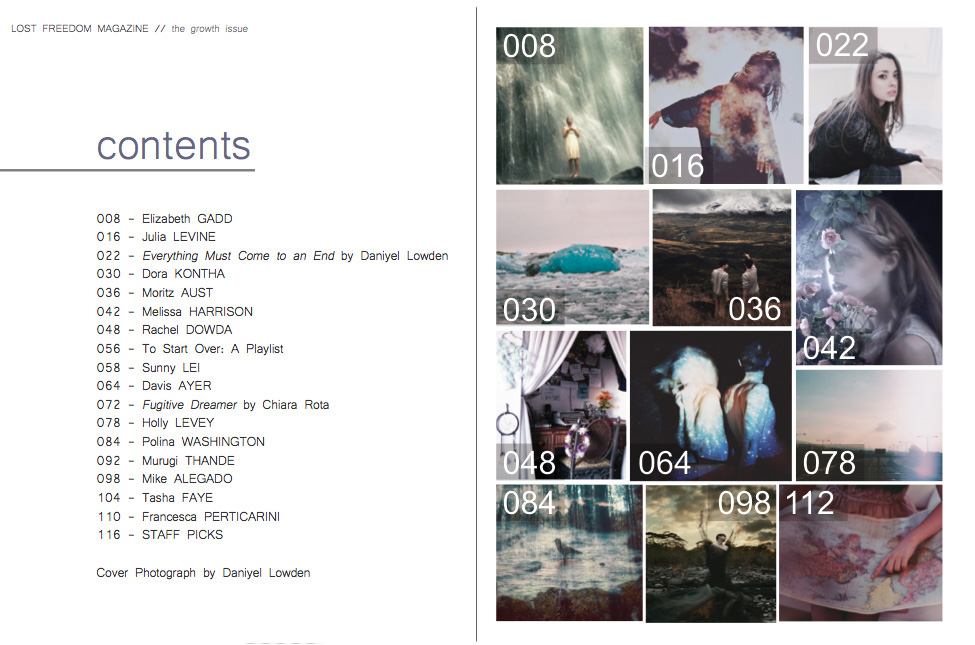
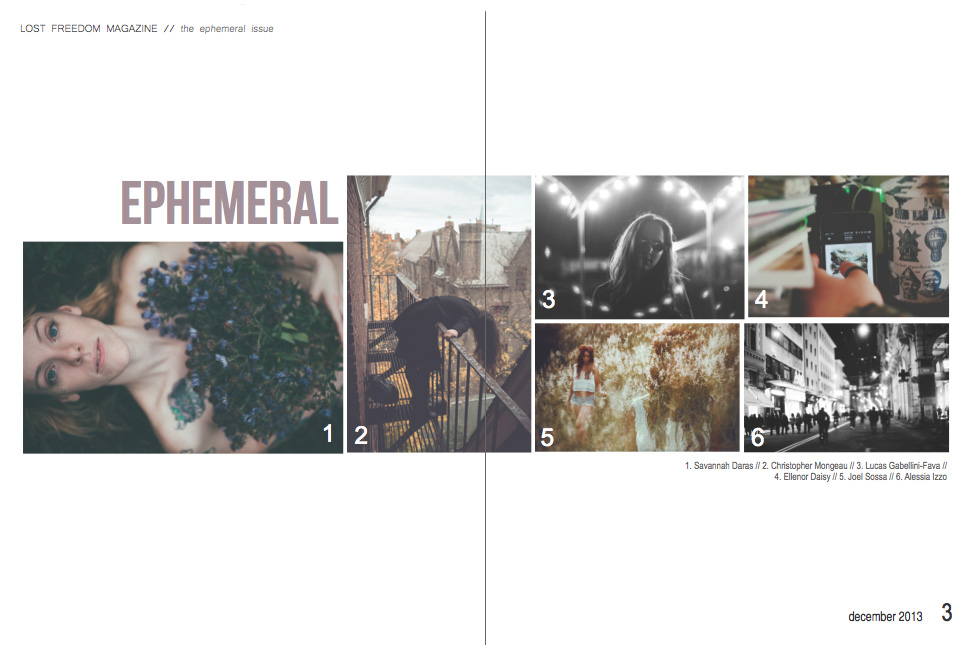
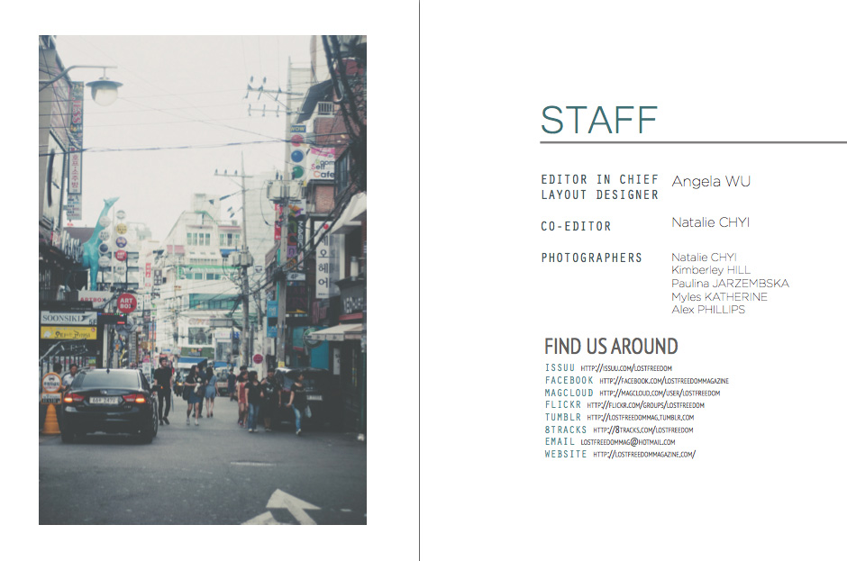
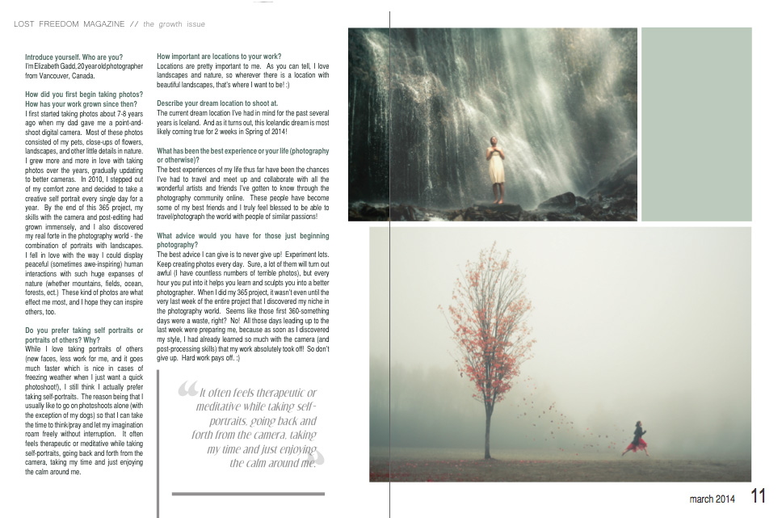

Lost Freedom Magazine homepage
Lost Freedom Magazine website interview page
Issue Cover
Table of Contents
Featured Images
Contributors Interview example Interview example
 Interview example Interview example«»
Lost Freedom Magazine is an online based photo magazine, established in the summer of 2011. I founded the magazine with one of my good friends, and created 20 issues over three years. The issues were published online only, but available to purchase in print. I also created a website for the magazine, occassionally publishing interviews and previews to upcoming issues.
These photos above show the design of the Lost Freedom website, along with excerpts from interviews through different issues. The website can be seen in its entirety here and the issues can be seen online here.